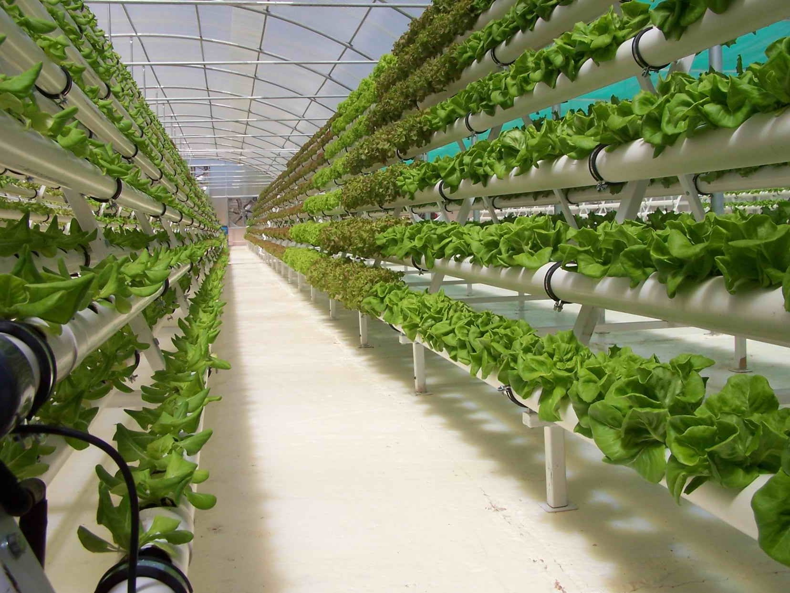

Ambient Temperature
Wet bulb temperature
Dew point temperature
Relative humidity.
Whats a psychrometer
How to use a psychrometer
How to measure temperature and relative humidity

WHAT IS A PSYCHROMETER AND HOW IT CAN MEASURE TEMPERATURE AND HUMIDITY....
In this video, we are going to demonstrate how to Humidity and Temperature using a digital psychrometer.
Very often, I have seen growers using desktop temperature sensors or the inaccurate ones to measure humidity. Humidity is one of the most important parameter in greenhouse climate control and is often not managed properly.
In this video I am demonstrating the use of a psychrometer and use that to measure the following
If you know the relative humidity accurately you can control and ensure your plants dont get issues such as fungal infection due to high humidity or dehydrate due to low humidity.
This video is a guide for the following questions